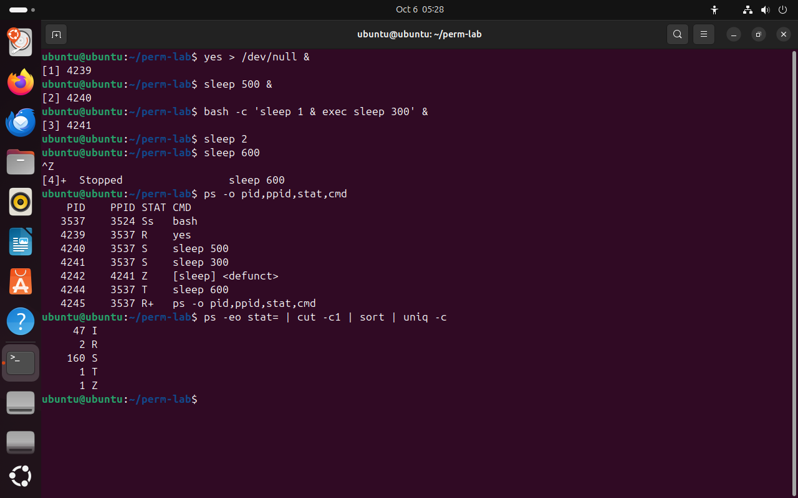

Часть 3 из 7
Состояния процесса
В этой части разберём, в каких состояниях бывает процесс, как их читать в столбце STAT команды ps и как получить каждое состояние на опыте.
3.1 Пять состояний
Процессор в каждый момент выполняет на одном ядре только один процесс. Остальные либо ждут своей очереди, либо ждут события — нажатия клавиши, ответа диска, истечения таймера. Поэтому большую часть времени почти все процессы системы «спят». Ядро хранит для каждого процесса его состояние, а ps показывает его в столбце STAT одной буквой.
| Буква | Состояние | Что происходит | Пример |
|---|---|---|---|
R | running — выполняется | процесс работает на процессоре или стоит в очереди к нему | yes > /dev/null — бесконечный вывод |
S | sleeping — спит | ждёт события и проснётся, когда оно наступит или придёт сигнал | sleep 500, оболочка в ожидании ввода |
D | uninterruptible — ждёт устройство | ждёт завершения ввода-вывода, сигналы до его конца не обрабатывает | чтение с медленного или зависшего диска |
T | stopped — остановлен | приостановлен сигналом и ждёт команды продолжить | процесс после Ctrl+Z |
Z | zombie — зомби | уже завершился, но родитель ещё не забрал код завершения | потомок, родитель которого не вызывает wait |
Состояния похожи на работу сотрудников в офисе. R — человек работает за компьютером или стоит в очереди к единственному свободному компьютеру. S — ждёт ответа на письмо и занят другим, пока ответа нет. D — ждёт у принтера, который печатает его документ, и не отойдёт, пока печать не кончится. T — ушёл на перерыв по распоряжению начальника. Z — уволился, но его карточка ещё лежит в отделе кадров, пока руководитель не распишется в приказе.
Иногда после буквы состояния стоят дополнительные знаки: s — у оболочки терминала, + — у процесса, который сейчас занимает терминал. Для состояния важна только первая буква. Буквой I помечены служебные потоки ядра, их в системе много.
3.2 Состояния на опыте
В опыте получим четыре состояния. yes > /dev/null бесконечно печатает строку y в устройство, которое всё выбрасывает, — процесс всё время занят и находится в состоянии R. sleep 500 спит. Команда sleep 600 без & занимает терминал, а сочетание Ctrl+Z останавливает её — состояние T.
Зомби получается, когда потомок завершился, а родитель не забрал его код завершения. В опыте bash -c 'sleep 1 & exec sleep 300' оболочка запускает sleep 1 в фон, а затем заменяет себя программой sleep 300. Через секунду потомок sleep 1 завершается, но его родитель теперь — sleep 300, который не умеет ждать потомков. Потомок остаётся зомби с пометкой <defunct>.
Последняя команда считает процессы системы по состояниям: ps -eo stat= выводит столбец STAT всех процессов без заголовка, cut -c1 оставляет первую букву, sort и uniq -c считают одинаковые буквы.
yes > /dev/null &# всё время занятчто делает
Что делает команда. Запускает в фоне процесс, который бесконечно пишет строку y в устройство-«корзину»; он всё время занят.
По частям:
yes- бесконечно печатать строку y
>- записать вывод в файл
/dev/null- устройство, которое выбрасывает всё записанное
&- запустить команду слева в фоне и сразу продолжить
sleep 500 &# спитчто делает
Что делает команда. Запускает в фоне процесс, который спит 500 секунд.
По частям:
sleep- ничего не делать указанное число секунд
500- сколько секунд
&- запустить команду слева в фоне и сразу продолжить
bash -c 'sleep 1 & exec sleep 300' &# будущий зомбичто делает
Что делает команда. Запускает оболочку, которая порождает потомка и заменяет себя программой sleep; через секунду потомок станет зомби.
По частям:
bash -c '…'- запустить bash и выполнить команды из строки
sleep 1 &- потомок: спит секунду в фоне и завершается
exec sleep 300- заменить саму оболочку программой sleep 300; новая программа не ждёт потомков
&- запустить всё в фоне
sleep 2# дать потомку завершитьсячто делает
Что делает команда. Ждёт две секунды, чтобы потомок успел завершиться.
По частям:
sleep- ничего не делать указанное число секунд
2- сколько секунд
sleep 600# без & — занимает терминалчто делает
Что делает команда. Запускает sleep на переднем плане: терминал занят, пока его не остановить.
По частям:
sleep- ничего не делать указанное число секунд
600- сколько секунд
^Z# Ctrl+Z: остановитьps -o pid,ppid,stat,cmd# состояния процессов терминалачто делает
Что делает команда. Выводит процессы текущего терминала: номер, родителя, состояние и команду.
По частям:
ps- вывести сведения о процессах
-o pid,ppid,stat,cmd- выводить столбцы pid,ppid,stat,cmd
ps -eo stat= | cut -c1 | sort | uniq -c# сколько процессов в каждом состояниичто делает
Что делает команда. Считает все процессы системы по первой букве состояния.
По частям:
ps- вывести сведения о процессах
-eo stat=- -e — все процессы системы; -o stat= — выводить только этот столбец, знак = убирает заголовок
|- передать вывод левой команды на вход следующей
cut- вырезать из строк нужные символы или поля
-c1- оставить первый символ строки
|- передать вывод левой команды на вход следующей
sort- отсортировать строки
|- передать вывод левой команды на вход следующей
uniq- объединить одинаковые соседние строки
-c- перед каждой строкой вывести, сколько раз она повторилась
- 1Ctrl+Z остановил задание
- 2R: yes занят всё время
- 3S: sleep ждёт таймер
- 4Z: потомок завершился, родитель не забрал код
- 5T: остановлен
- 6в системе спят почти все процессы


Весь снимок ↗Процессы терминала в состояниях R, S, T и Z; число процессов системы по состояниям.
Что показывает снимок. В таблице процессов терминала видны все четыре состояния: R у yes, S у sleep, T у остановленного sleep 600 и Z у потомка с пометкой <defunct>; в системе 160 процессов спят.
Где это пригодится. Если сервер тормозит, сначала смотрят процессы в состоянии R и D: первые занимают процессор, вторые ждут медленный диск.
На схеме ниже показаны переходы между состояниями и события, которые их вызывают. Нажмите на состояние, чтобы увидеть, как процесс в него попадает и как из него выходит.
Итоги части 3
- Столбец STAT в
ps: R — выполняется, S — спит, D — ждёт устройство, T — остановлен, Z — зомби. - Почти все процессы системы большую часть времени спят и процессор не занимают.
- Ctrl+Z останавливает процесс переднего плана — состояние T.
- Зомби — завершившийся процесс, код завершения которого родитель ещё не забрал.
В отчётСнимок с четырьмя состояниями и объяснение, почему потомок стал зомби.